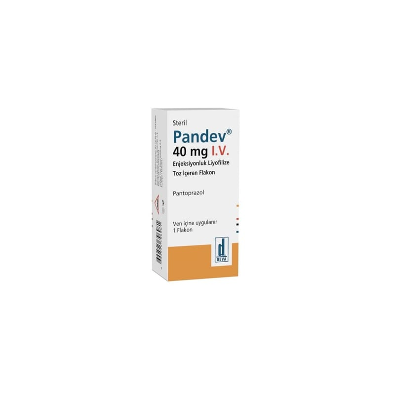

Pandev 40 mg IV Enjeksiyonluk Liyofilize Toz İçeren Flakon, Flakon, 1 Adet

Ne için kullanılır
KT · Bölüm 1PANDEV gözle görülebilen yabancı madde içermeyen homojen, beyaz- beyazımsı renkli liyofilize tozdur.
PANDEV “proton pompası inhibitörü” olarak bilinen ilaçlardan biridir. Midenizde asit oluşumunu azaltır. Midede asit nedeniyle oluşan hastalıkların tedavisinde kullanılır.
PANDEV; Asidin mideden yemek borusuna kaçışına bağlı yemek borusunda iltihaplanma ve ağrı (reflü özofajit), Bağırsakların üst kısmındaki ülser (duodenum ülseri) veya midedeki ülser (gastrik ülser), Akut (ani başlangıçlı) kanamalı mide veya bağırsakların üst kısmındaki ülserlerde, kanamanın tedavisinde veya kanamanın tekrarlamasını önlemede,
Zollinger Ellison Sendromu gibi midede aşırı asit üretiminin olduğu durumların tedavisinde kullanılır.